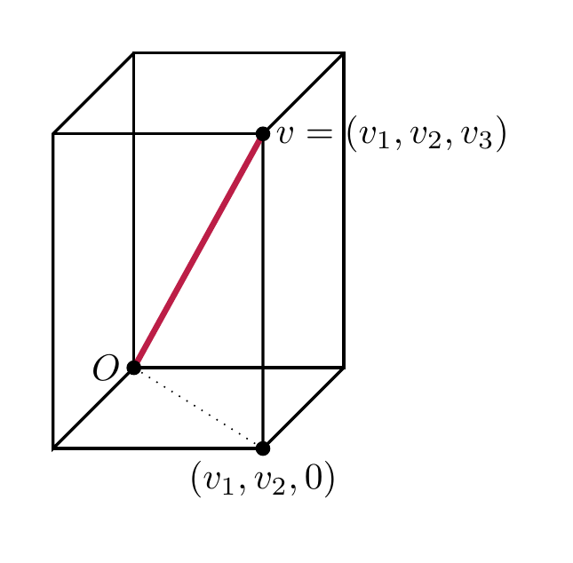
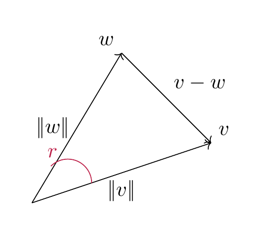

Euclidean spaces¶
The definition of a (real) vector space encodes the existence (and good properties) of the addition of vectors and the scalar multiplication of vectors. The vector space \({\bf R}^n\) has, however, another important piece of structure, namely the distance between two points, and the property of vectors being orthogonal to each other.
The scalar product on \({\bf R}^n\)¶
Definition 7.1
The scalar product of \(v, w \in {\bf R}^n\) is defined as
(This is not to be confused with the scalar multiple of a vector, which is again a vector!)
Example 7.2
The scalar product can be positive, zero, or negative:
-
\({\left \langle \left ( \begin{array}{c} 1 \\ 2 \end{array} \right ), \left ( \begin{array}{c} -2 \\ 2 \end{array} \right ) \right \rangle} = 1 \cdot (-2) + 2 \cdot 2 = 2\)
-
\({\left \langle \left ( \begin{array}{c} 1 \\ 2 \end{array} \right ), \left ( \begin{array}{c} -2 \\ 1 \end{array} \right ) \right \rangle} = 1 \cdot (-2) + 2 \cdot 1 = 0\)
-
\({\left \langle \left ( \begin{array}{c} 1 \\ 2 \end{array} \right ), \left ( \begin{array}{c} -2 \\ 0 \end{array} \right ) \right \rangle} = 1 \cdot (-2) + 2 \cdot 0 = -2\)
However, for any \(v \in {\bf R}^n\), we have
(7.3)
i.e., a scalar product of a vector with itself is always non-negative. This implies that
is a well-defined (real) number. It is called the norm of the vector \(v\).
Lemma 7.4
The norm \(|\hspace{-0.5mm}| {v} |\hspace{-0.5mm}|\) is the length of the line segment from the origin to \(v\).
For \(v, w \in {\bf R}^2\), there holds
where \(r\) is the angle between the vector \(v\) and \(w\).
Proof. The formula for the norm follows from repeatedly applying the Pythagorean theorem. Illustrating this for \(n = 3\), we see that the line segment (shown dotted below) from the origin \(O = (0,0,0)\) to the point \((v_1, v_2, 0)\) has length \(\sqrt{v_1^2 + v_2^2}\). Therefore the length of the segment from \(O\) to \(v\) is

The formula for the norm of \(v-w\) follows is a reformulation of the law of cosines.

◻
Given a square matrix \(A \in {\mathrm {Mat}}_{n \times n}\), we have considered so far the linear map
In addition to that, there is another fundamental map that one can associate to a matrix:
Here we regard \(v\) and \(w\) as column vectors, i.e., as \(n \times 1\)-matrices. Therefore, for \(v = \left ( \begin{array}{c} v_1 \\ \vdots \\ v_n \end{array} \right )\), \(v^T = \left ( \begin{array}{ccc} v_1 & \dots & v_n \end{array} \right )\) is a row vector (with \(n\) entries). Therefore \(v^T A\) is an \(1 \times n\)-matrix, so that \(v^T A w\) is an \(1 \times 1\)-matrix, i.e., just a real number. We call this number the scalar product of \(v\) and \(w\) with respect to the given matrix \(A\).
Lemma 7.5 (Related exercises: Exercise 7.1)
The scalar product has the following fundamental properties:
- If we fix \(w \in {\bf R}^n\), then the maps
are linear (cf. Definition 4.1; e.g., for the first this means concretely that
for \(r, r' \in {\bf R}\), \(v, v' \in {\bf R}^n\). We refer to this by saying that \({\left \langle -, - \right \rangle} : {\bf R}^n \times {\bf R}^n \to {\bf R}\) is a bilinear form (or as the bilinearity of the scalar product).
- We have
This property is called symmetry.
Proof. By Proposition 4.19, the map \(w \mapsto v^T w = {\left \langle v, w \right \rangle}\) is linear. The proof of the linearity in the first argument is similar, or it follows from symmetry.
The identity \({\left \langle v, w \right \rangle} = {\left \langle w, v \right \rangle}\) is directly clear from the definition. One may also prove it using :
Noting that any \(1 \times 1\)-matrix (such as \(v^T w\)) is equal to its transpose, the left hand side equals \({\left \langle v, w \right \rangle}\), while the right equals \({\left \langle w, v \right \rangle}\). ◻
Using the bilinearity of \({\left \langle -, - \right \rangle}\), we can compute the following expression
Comparing this with the cosine law above we see
The factor \(\cos r\) is equal to 0 precisely if \(r = -\frac \pi 2, \frac \pi 2\) (i.e., \(90^\circ\) or \(-90^\circ\)). In other words,
if the angle between the vectors \(v\) and \(w\) is \(\pm 90^\circ\). This motivates the following definition.
Definition 7.6
Two vectors \(v, w \in {\bf R}^n\) are said to be orthogonal if
Positive definite matrices¶
Definition and Lemma 7.7
If \(A\) is a symmetric \(n \times n\)-matrix (i.e., \(A = A^T\)), then the map
is bilinear and symmetric, i.e., Lemma 7.5 holds verbatim for \({\left \langle -, - \right \rangle_{A}}\) instead of the standard scalar product (which corresponds to the case \(A = {\mathrm {id}}_n\)).
Example 7.8
Suppose \(A = \left ( \begin{array}{cccc} 1 & 0 & 0 & 0 \\ 0 & 1 & 0 & 0 \\ 0 & 0 & 1 & 0 \\ 0 & 0 & 0 & -1 \end{array} \right )\). Then \(A w = \left ( \begin{array}{c} w_1 \\ w_2 \\ w_3 \\ -w_4 \end{array} \right )\), so that
This example is not an anomaly, but the basis of so-called Minkowski space which is fundamental in special relativity, which is \({\bf R}^{3+1}\) with 3 space coordinates and 1 time coordinate.
The standard basis vectors \(e_1 = \left ( \begin{array}{c} 1 \\ 0 \\ 0 \\ 0 \end{array} \right ), \dots, e_4 = \left ( \begin{array}{c} 0 \\ 0 \\ 0 \\ 1 \end{array} \right )\) are orthogonal to each other, but
where as \({\left \langle e_k, e_k \right \rangle_{A}} = +1\) for the other three basis vectors. In that sense, the scalar product (with respect to \(A\)) is able to distinguish between the last and the other three directions.
Definition 7.9
A symmetric matrix \(A\) is called positive definite if
for all \(v \in {\bf R}^n\), \(v \ne 0\). In this case we can define the norm (of \(v\) with respect to the matrix \(A\)) as
It is negative definite if instead \({\left \langle v, v \right \rangle_{A}} < 0\) for all \(v \ne 0\). The matrix \(A\) is called indefinite if there exist \(v, w \in {\bf R}^n\) with \({\left \langle v, v \right \rangle_{A}} > 0\) and \({\left \langle w, w \right \rangle_{A}} < 0\).
Example 7.10
As we have seen in , \({\mathrm {id}}_n\) is positive definite. The matrix in Example 7.8 is indefinite.
It is suggestive to blame the \(-1\) in the last entry for the indefiniteness of the matrix in Example 7.8. The following result gives a way to ensure positive definiteness for general matrices. To state it, we introduce a bit of terminology:
Definition 7.11
For a square matrix \(A\), the principal submatrix (of size \(r\)) is the matrix
I.e., it is the matrix consisting of the first \(r\) rows and columns of \(A\).
Proposition 7.12
Let \(A \in {\mathrm {Mat}}_{n \times n}\) be a symmetric square matrix. The following are equivalent:
-
the bilinear form \({\left \langle -, - \right \rangle_{A}}\) is positive definite, i.e., \({\left \langle v, v \right \rangle_{A}} \ge 0\) for all \(v \in {\bf R}^n\),
-
\(A\) is positive definite,
-
For all \(1 \le r \le n\), \(\det (A^{(r)}) > 0\).
In particular, any positive definite matrix \(A\) has \(\det A > 0\). Therefore such a matrix is invertible (Theorem 5.15).
A proof of this criterion requires methods from §Section 7.3.
Example 7.13
Consider the matrix \(A = \left ( \begin{array}{ccc} 1 & 2 & t \\ 2 & 5 & 8 \\ t & 7 & 14 \end{array} \right )\), where \(t \in {\bf R}\) is some parameter. We inspect its positive definiteness: since \(A^{(1)} = 1\) is positive, \(\det A^{(2)} = \det \left ( \begin{array}{cc} 1 & 2 \\ 2 & 5 \end{array} \right ) = 1 > 0\) and \(\det A = \det A^{(3)} = -5t^2 + 32t -50\). For \(t = 3\), this equals \(+1\), so the matrix \(A\) is positive definite in this case. For \(t=4\), this equals \(-2\), so the matrix \(A\) is indefinite in this case.
Example 7.14
The defininiteness of matrices has applications in analysis: for a (twice differentiable) function \(f : {\bf R}^2 \to {\bf R}\), such as
one considers the so-called Hesse matrix, which is given by
For the above function it is
which is positive definite. By contrast, for \(g(x, y)=x^2 - y^2\), it is \(\left ( \begin{array}{cc} 2 & 0 \\ 0 & -2 \end{array} \right )\), which is indefinite. One proves in analysis that the positive defininetess of the Hesse matrix implies that there is a local minimum at a given point \((x,y)\), provided that \(\frac{\partial f}{\partial x} = \frac{\partial f}{\partial y} = 0\) at this point. Thus, \(f\) has a local minimum at the point \((0,0)\), but \(g\) does not.